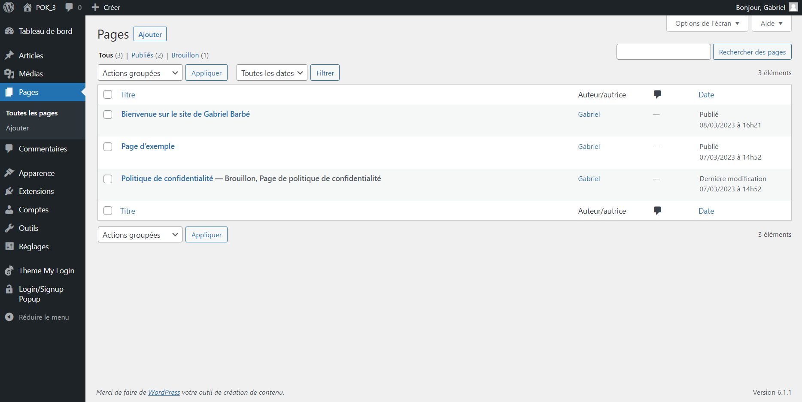
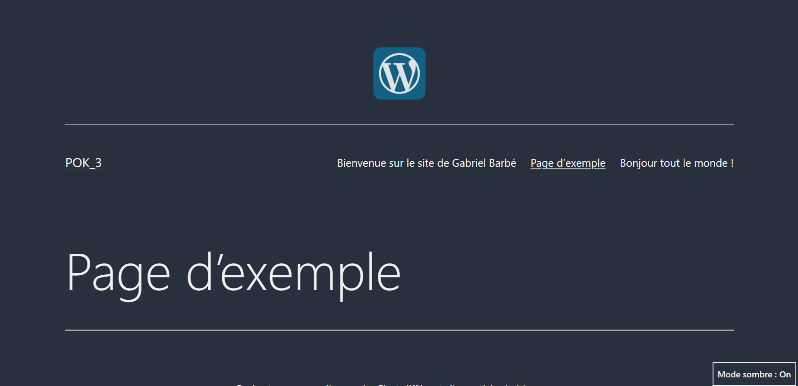

Site WP
- Gabriel BARBE
Préambule
Après les deux premiers POK m'ayant permis de découvrir le développement Web autant en front-end qu'en back-end, j'aimerais passer celui-ci à faire un site web sur WordPress afin de pouvoir comparer par moi-même les différences. En effet, ayant acquis certaines compétences au cours de cette année, j'en viens à me demander si, finalement, ces compétences sont nécessaires à un développement de site web à mon niveau.
Ne voyez pas ici un quelconque regret de mes choix de cours, au contraire ce sont ces cours qui me permettent de pouvoir me poser cette question aujourd'hui et pouvoir comprendre les différents points positifs et négatifs de chaque méthode.
Pour répondre à cette problématique, je vais effectuer ce POK en deux temps :
- Un premier temps où je tenterais de réaliser le site créé dans mes deux premiers POK, le front-end et le back-end.
- Un second temps où je comparerais les deux sites et les deux manières de faire.
Mes a priori
Avant de débuter,je précise que les idées listées dans ce paragraphe ne s'appuient que sur ma connaissance, pour le moment limitée, de WordPress. Elles n'ont pas vocation à être une vérité générale.
Les points que je pense différents dans un site réalisé sur WordPress ou via du développement codé sont les suivants :
- La liberté de création : il me parait clair qu'aussi bien fait que puisse l'être WordPress, un site réalisé en langage html donnera obligatoirement plus de liberté.
- La simplicité : WordPress paraît au premier abord bien plus facile d'accès à tout non initié.
- Le back-end : la gestion du back-end est une de mes grandes interrogations sur WP, est-elle bien gérée ?
Rappelons tout de même que WordPress propulse aujourd'hui 40% des sites web disponibles aujourd'hui à travers le monde.
Premiers pas sur WordPress
Après un rapide tuto d'installation de WordPress en local, ce qui n'est pas si aisé, je débute la création de mon propre site web. Je me retrouve tout d'abord sur un dashboard "admin" où j'ai accès à tous les différents éléments de mon site :

Je crée donc une première page et commence la création de mon site. Après quelques manipulations, je dois dire que je ne trouve pas ça idéale.
En effet, le système entier marche par bloc et il faut constamment définir le type de son bloc dans un menu qui ne s'ouvre pas systématiquement ; un clic à coté nous pousse à tout recommencer et la suppression des blocs n'est pas optimisée non plus. De plus, il existe un système qui permet d'utiliser des blocs sur une page puis une autre, notamment les en-tête et pieds de pages, mais ce système en est à sa version bêta et n'est pas optimisé non plus.
En revanche, WordPress permet d'utiliser une grande diversité d'informations provenant d'autres sites sans efforts et sans système d'API. C'est bien plus facile d'utilisation et nous pouvons par exemple poster des objets provenant de Youtube, Twitter, Wolfram, Amazon... sans aucun effort.
.
WordPress permet aussi d'insérer du code directement sur notre site dans un cadre bien-sûr assez restrictif mais qui a le mérite d'exister, bien que je doive encore en tester les possibilités. Enfin, WordPress rend (très) facile d'utilisation tous les composants ou pages stéréotypés notamment grâce à toutes les extensions dont elle dispose (~50000). En d'autres mots tout ce qui est commun à tous les sites web sera forcément présent ou facile à insérer sur votre site web, par exemple : les commentaires utilisateurs (directement inscrit dans la page web) ou une page de connexion.
Ces commentaires sont des premières impressions et il se peut que je n'ai tout simplement pas encore assez rodé le système, il me reste encore beaucoup à explorer de l'étendue des possibilités données par ce logiciel.
Pistes d'explorations
- Les possibilités du code
- Page de connexion, cookies ?
- Se renseigner sur la sécurité
Pages de connexion
Une connexion est directement disponible sur la page d'accueil du site WordPress, chose que je n'avais pas comprise avant. Le problème est que je suis obligé d'être connecté en tant qu'admin pour pouvoir créer d'autres comptes. Pour régler ce problème, on peut télecharger une extension : "Theme My Login" qui en plus de modifier mon interface (ce qui n'améliore pas grandement l'UI pour ma part) me permet aussi de d'avoir accès à la route : localhost/POK_3/register.
Cette route permet aux utilisateurs de créer un compte sur le site.
Je peux bien sûr très aisément définir les champs nécessaires à cette inscription mais ces champs sont aussi limités (voir ci-dessous) :

Je peux activer ou désactiver chacun de ces champs et ainsi configurer la sécurité allouée aux utilisateurs.
Menu
Là encore, tout est extrêmement simple, en trois clicks on obtient un menu intuitif nous dirigeant vers les principales pages de mon site. Le menu est créé en haut ou en bas de la page au choix. J'ai opté pour un menu en haut.
Ce menu indique à quelle page nous nous trouvons et quelle page nous pouvons joindre. On peut, là encore, ajouter des éléments CSS de notre propre fait et les attribuer au menu par classe. Ci-dessous le menu créé, on peut voir qu'un mode sombre est aussi disponible pour notre site.

Fin du sprint 1
C'est la fin de ce premier sprint, j'ai encore de nombreuses taches à effectuer durant le prochain ! L'éditeur n'est pas si facile à prendre en main au début, j'étais un peu perdu entre le dashboard, les différentes pages et surtout la navigation n'est pas réeellement intuitive.
La gestion des pages en particulier offre assez peu de libertés et fait très blog, à moins que l'on n'utilise du CSS en plus.
Pistes suivantes :
- Base de données
- CSS personnel
- Extensions utiles
- Template d'items présents sur toutes les pages
- Code HTML ?
L'hébergement sur WordPress
WordPress propose un solution d'hébergement qui est wordpress.com. Cette solution est une solution payante plutôt contraignante, je ne me dirigerai pas forcément vers cette solution afin d'héberger mon site web. Il existe d'autres hébergeurs plus populaires au sein de la communauté tels que ThemeCloud qui a l'avantage de proposer un site sécurisé, gratuit et bénéficiant d'un support pendant 30 jours
; après quoi il faudra payer.
Petit projet
Afin de mettre en pratique tout ce qui a été vu jusqu'à présent, je vais de ce pas réaliser un projet de site statique sur WordPress.
Ce site sera développé pour un coach sportif indépendant qui voudrait communiquer, sur ses offres notamment, via ce site web.
Contexte
Thibault est un jeune coach indépendant ayant obtenu son diplome récemment. Il n'a aucune connaissance en informatique mais souhaiterait développer un site web statique contenant ses offres, quelques vidéos de ses entrainements, des liens vers ses principaux médias sociaux et un moyen de le contacter. Pour effectuer cette mission, il fait appel à son ami Gabriel, jeune développeur en devenir, qui propose de lui apporter son aide en 10h, car il est très occuper dans le cadre de ses études. Par chance, Gabriel a effectué sa dernière année d'étude sur le développement web et comprend qu'en si peu de temps une de ses seules possibilités est de passer par un site no-code, même si il est conscient que 10h ne sera surement pas assez, il pourra au moins fournir une ébauche de site à Thibault. Il décide donc de développer le site web sur WordPress (tiens tiens).
Conception
L'objectif ici est d'utiliser WordPress tel qu'il a été pensé, à mon niveau et avec le temps compté il est bien plus confortable d'exploiter toutes les possibilités de WordPress.
Pour créer ce site web, j'utilise un thème disponible Wordpress : Ocean. Ce thème a l'avantage de posséder plusieurs démos importables ce qui permet de ne pas partir de rien. On importe donc la démo coaching sur notre site qui regroupe les fonctionnalités que Thibault souhaitait pour son site.
S'en suit alors un travail de recherche d'extensions. Nous installons quelques extensions basiques suggérés sur (https://www.presse-citron.net/hebergeur/faq/plugins-wordpress/) et (https://kinsta.com/fr/meilleures-extensions-wordpress/) permettant plus de possibilités sur la construction des pages ou d'afficher le flux instagram de @coachthibault entre autres, la liste ci-dessus détaille les extensions installées :
- Social feed gallery
- Elementor
- Duplicate page
- Hustle : crée des pop-up et envoi des mails automatiquement
- WP Form : crée un formulaire de contact
- Central color palette
Brief graphique
Après un rendez-vous téléphonique avec le client, nous avons pu réaliser ensemble le brief graphique que l'on souhaitait appliquer au site.
Développement
La suite du processus est assez simple avec le template importé. Cela se résume à remplir les cases avec les informations de coach.thibault, changer les couleurs et les éléments typographiques avec ceux issus de notre brief graphique. J'ai aussi rajouté quelques fonctionnalités, des vidéos issues de l'instagram du client par exemple, qui n'était pas forcément prévues dans le template ; c'est très facile à rajouter, il suffit d'insérer un bloc et de lui assigner les fonctionnalités nécessaires.
L'extension "Elementor" est, je trouve, bien plus intuitive et pratique que le simple wordpress pour modifier l'interface. En revanche, certaines fonctionnalités ne sont pas disponibles dans la version gratuite.